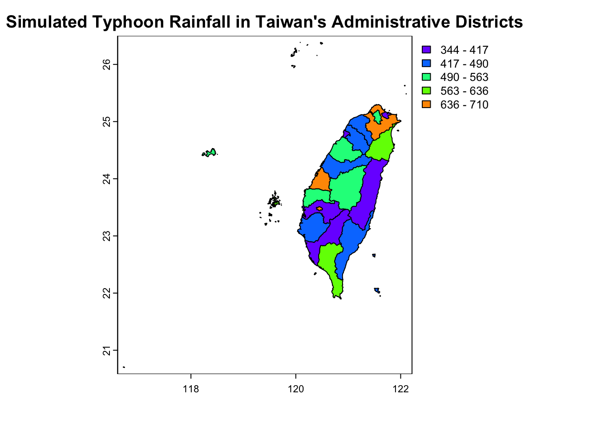
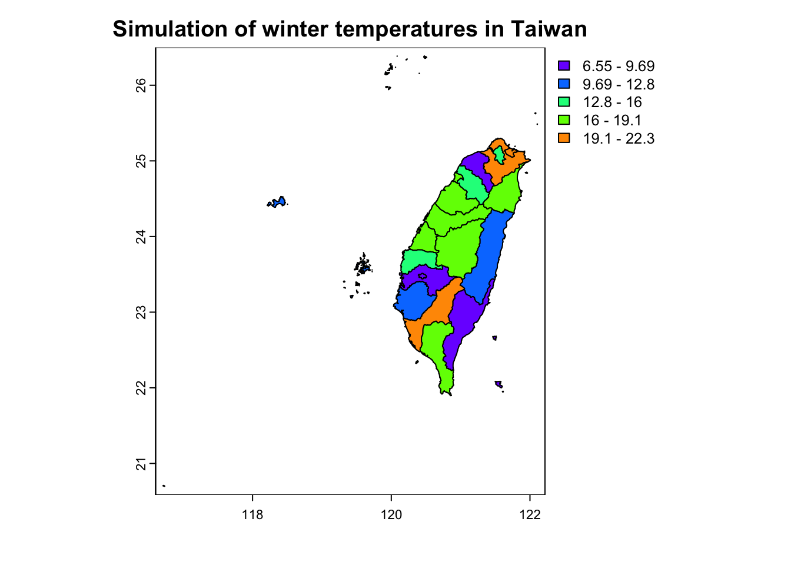
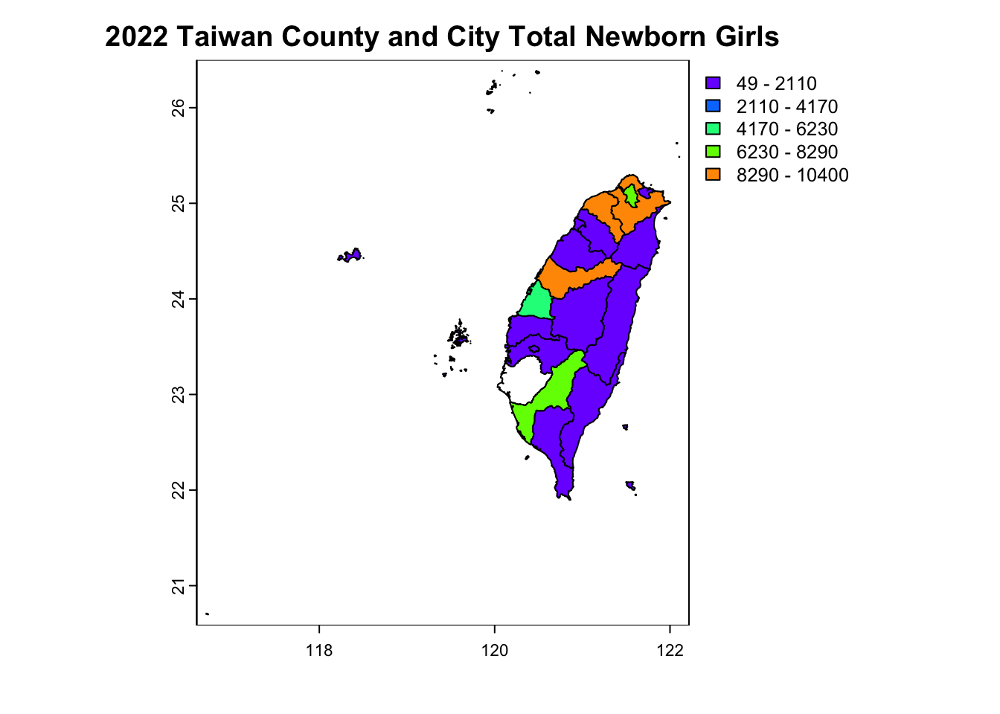

Chapter 5 地圖資料
5.1 台灣行政區模擬颱風降雨量
導入套件包
（一）台灣行政區模擬颱風降雨量
# 確保路徑存在
if (!dir.exists("data/gadm")) {
dir.create("data/gadm", recursive = TRUE)
}
Taiwan2 = gadm(country="TWN", level=2, path=tempdir())
terra::saveRDS(Taiwan2, file="data/gadm/Taiwan2.rds")
Taiwan2 = terra::readRDS("data/gadm/Taiwan2.rds")
Taiwan2$rainfall = rnorm(length(Taiwan2$NAME_2), mean=500, sd=100) #數據模擬
plot(Taiwan2, "rainfall", col.regions = rev(terrain.colors(100)),
main="Simulated Typhoon Rainfall in Taiwan's Administrative Districts")

Figure 5.1: 台灣行政區模擬颱風降雨量
（二）台灣行政區模擬冬季氣溫模擬
Taiwan2 = terra::readRDS("data/gadm/Taiwan2.rds")
Taiwan2$temperature <- rnorm(length(Taiwan2$NAME_2), mean = 15, sd = 5)
plot(Taiwan2, "temperature", col.regions = rev(terrain.colors(100)),
main = "Simulation of winter temperatures in Taiwan")

Figure 5.2: 台灣行政區模擬冬季氣溫模擬
5.2 2022台灣新生兒數量
(一)2022台灣新生兒數量：男女分開
for(i in 1:length(dat$Region.c)) {
for(j in 1:length(Taiwan2$NL_NAME_2)) {
if(grepl(dat$Region.c[i], Taiwan2$NL_NAME_2[j], ignore.case=TRUE)) {
# 更新男孩出生数
Taiwan2$MeasureBoy[j] <- as.double(dat$Boy[i])
# 更新女孩出生数
Taiwan2$MeasureGirl[j] <- as.double(dat$Girl[i])
}
}
}繪製男孩出生數地圖
plot(Taiwan2, "MeasureBoy", col.regions = rev(terrain.colors(max(Taiwan2$MeasureBoy, na.rm = TRUE))),
main="2022 Taiwan County and City Total Newborn Boys")Figure 5.3: 男孩出生數地圖
繪製女孩出生數地圖
plot(Taiwan2, "MeasureGirl", col.regions = rev(terrain.colors(max(Taiwan2$MeasureGirl, na.rm = TRUE))),
main="2022 Taiwan County and City Total Newborn Girls")

Figure 5.4: 女孩出生數地圖
男女出生數在地圖上看並無顯著差異
(二)2022台灣新生兒數量：男女合併
dat=read.csv("~/Downloads/TWN_newBirth.csv")
for(i in 1:length(dat$Region.c)) {
for(j in 1:length(Taiwan2$NL_NAME_2)) {
if(grepl(dat$Region.c[i],Taiwan2$NL_NAME_2[j],ignore.case=T))
Taiwan2$measure[j] <- as.double(dat$Total[i])
}
}繪製男女合併出生數地圖
plot(Taiwan2,"measure", col.regions = rev(terrain.colors(Taiwan2$measure)),
main="2022 Taiwan County and City Total Newborn")Figure 5.5: 2022台灣新生兒數量：男女合併